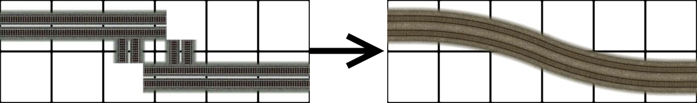
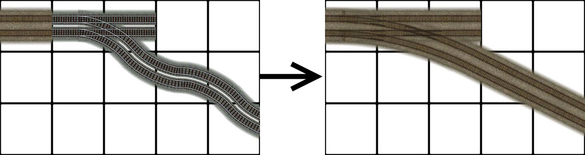
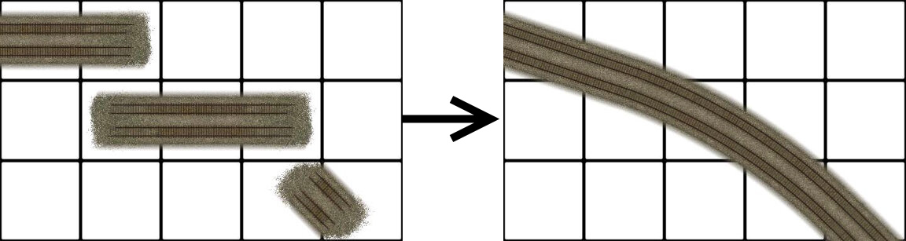
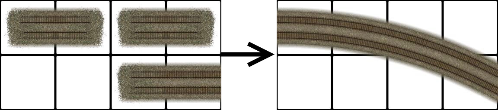
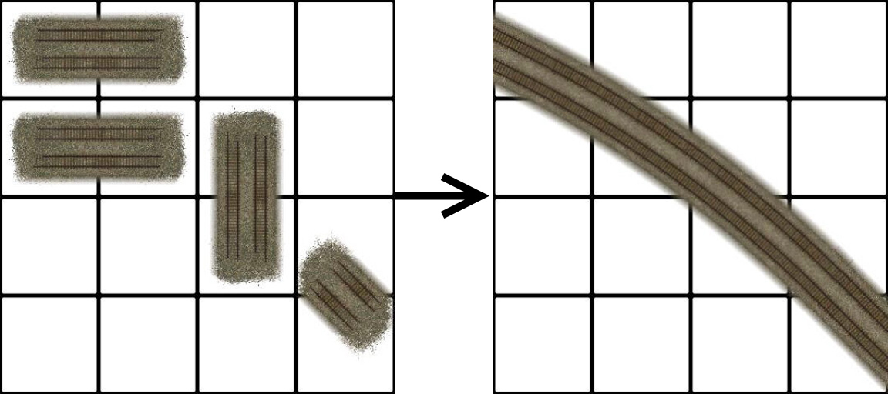
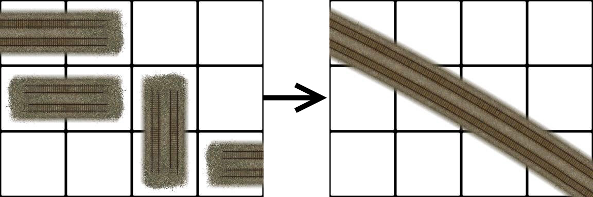
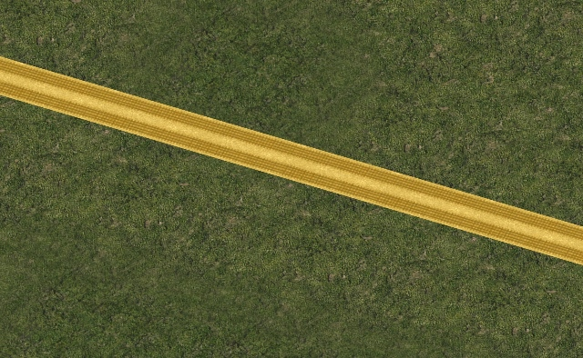
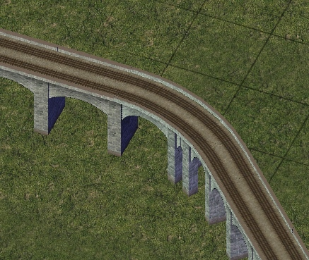
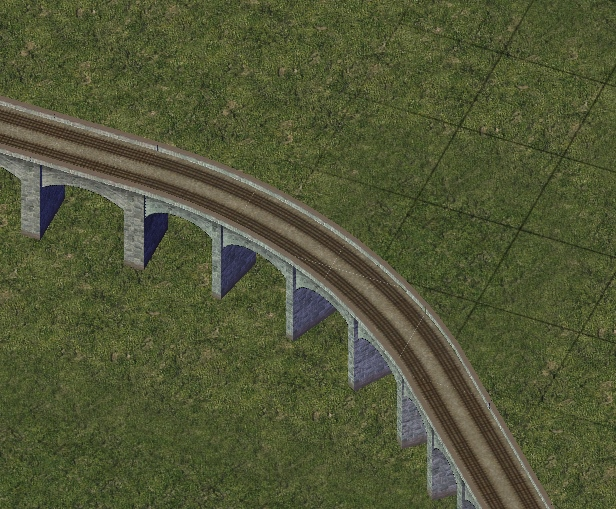

RealRailway (RRW)
The RealRailway or (RRW) is the new standard for rail transport in the NAM. The Real Railway surpasses the Maxis Rail and Railway Addon Mod (RAM) in favor of the Real Railway. The Real Railway is the only standard of rail that has continued work from the NAM Team since 2013 (NAM 32). Many enhancements, such as FlexTrack, Fractional Angled Rails (FARR), and the draggable Elevated RealRailway (ERRW) are products exclusive to the Real Railway.
PrefaceThe RealRailway started with the "mini-curves", which were to
replace the existing Maxis curves and turnouts with more realistic
looking versions. The gauge was also changed to represent standard
gauge (1435 mm), which approximates to 12 pixels in absolute terms. The
track spacing was also changed from 4 meters to 4.5 meters. The founder
of the project, Swordmaster,
determined the best way
to make realistic railways by spacing out the tracks with the new gauge
which makes the outer rails run flush with the Maxis rails but not with
the inner rails. Such differences can be noticed by running the RRW
base through an unconverted Transport Enabled lot or other unsupported
tracks. The RealRailway was at first basic in appearance and
functionality. Further enhancements have
made the RealRailway surpass the functionality of Maxis Rail.
Below is a snapshot from the initial 2013 RealRailway documentation and its
reasoning behind the shift to the RealRailway...

image taken from the RealRailway 2013 documentation.
Notice how the road pieces line up with the real life road networks but the Maxis Rail does not!

image taken from the RealRailway 2013 documentation.
Extended Radii from in the default curve for the RealRailway (308.48 px) compared to the maxis rail (172.8 px).
Basic Usage
The RealRailway has the same characteristics as
the Maxis Rail, as well as covering the
Puzzle Piece (PPs), wide radius curves (WRCs), Single Track Rail (STR), and large
turnouts. Swordmaster made this available for easing the adoption of the
Real Railway. Some draggable functionality has been changed to reflect the use
of the mini-curves and their functionality.
The
FlexTrack currently relies on patterns to make the desired curves or turnouts/
switches. While there is the advantage of not having to go into the menu to
find the pieces they can be hard to find the right patterns with conflicts if
the pieces are too close to each other. Testing the capabilities in a blank
region is always helpful to get the right patterns for the FlexTrack component.
The patterns and resultants are shown below....



A Class Turnouts


B Class Turnouts


C Class Turnouts

D Class Turnouts


E Class Turnouts

Combination Turnouts

FARR-2 Alternative implementation



Small Complex Turnouts

Fractional Angled Rail Road

Patterns are shown below...
FARR-3 Stright

FARR-3 to Orthogonal
FARR-3 to Diagonal

FARR-3 to FARR-2

FARR-2
FARR-2 Stright

FARR-2 to Orthogonal

FARR-2 to Diagonal

FARR-2 to FARR-1.5/1.33

FARR-2 G2 Tunout

FARR-1.5/1.33
FARR-1.5/1.33 Stright

FARR-1.5/1.33 to Orthogonal
FARR-1.5/1.33 to Diagonal

FARR-1.5/1.33 J2 Tunout
Both variants include support for some minicurves and multi radius curves. The MRC's supported are Radius (1, 2 and 3).
The ERRW pieces can be found in this menu near the top of the Rail menu in the picture shown below...
There are 4 main elevated transitions conforming to the on slope standard
Orthogonal Transitions

Diagonal Transitions
Usage of the ERRW

The same principle is used for the Diagonal on slope transitions.




R2 Curve


R3 Curve


MiniCurves


B2 Turnout


A2 Wye Turnout

Important notice!!!

Of course this action is not needed if the network being crossed is the Rail network itself.

Credits
• Swordmaster
• eggman121
• mgb204/rsc204
• woodb3kmaster
• Tarkus
• memo
• Shadow Assassin
• rivit
• Simmer2
Without their help, directly or indirectly, these projects for the Real Railway would not have taken off.